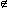
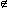
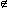
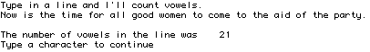
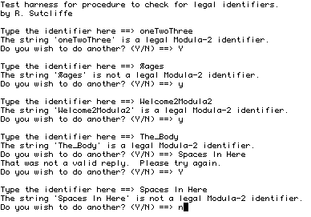

" so that the phrase "a is an element of A" is written "a A" and the phrase "b is not an element of A" is written "b  A."
" so that the phrase "a is an element of A" is written "a A" and the phrase "b is not an element of A" is written "b  A."Abstractly, a set is a collection of items of any type. Thus, it makes sense to write:
A = {1, 2, 3.525, Monday, true}
Not many computer languages have sets as a possible data type. Those that do usually restrict the abstract concept so as to require that all the elements of a given set be of the same basic type. Modula-2 inherits much of the syntax and semantics of its set type from Pascal, and does have this restriction, along with some others.
A Modula-2 set is a collection of items of the same scalar non-real type without regard to order.
When a Modula-2 set type is declared, the declaration includes the specification of what elements set variables of the new type may contain.
TYPE WeekDaySets = SET OF [Monday .. Friday]; DigitSet = SET OF [0 .. 9];
WARNING: Many older versions of Modula-2 follow the suggestion (not requirement) Wirth made in presenting Modula-2 that the maximum size of a set may be severely limited (usually to 16 or 32 elements.) Some, moreover limit set declarations to cardinal subranges starting at zero. Following this suggestion makes impossible such declarations as:
TYPE
CharSet : SET OF CHAR;
HunSet : SET OF [100 .. 110];
in the former case, because there would be too many potential elements, and in the latter because the possible CARDINAL values used in this fashion are not in the range the range [0 .. MaxSetSize - 1]. Such implementations sometimes provide a separate module LongSets (or something similar) with procedures to perform the appropriate operations on large sets.
The restriction above effectively eliminates most of the practical applications for sets, and versions of Modula-2 that followed this suggestion were regarded by most programmers as badly crippled. For this reason, the ISO standard for the language has a minimum requirement that whatever limitation an implementation may place on set size, SET OF CHAR must at the very least be permitted in a declaration.
For abstract sets, membership of an element in a set is indicated by the symbol "" so that the phrase "a is an element of A" is written "a A" and the phrase "b is not an element of A" is written "b  A."
Modula-2 set membership is indicated with the reserved word IN.
In Modula-2, therefore, the two phrases in the paragraph above are written:
a IN A
and
NOT (b IN A)
respectively.
One other difference between standard mathematical notation and that followed by Modula-2 is that when a literal set is written out, the type of the set must appear before the opening brace. This is indicated in the syntax diagram for a set, given in figure 9.1.
MODULE Aeiou;
(* Written by R.J. Sutcliffe *)
(* using ISO standard Modula-2 *)
(* last revision 1994 02 23 *)
FROM STextIO IMPORT
ReadChar, WriteString, WriteLn, SkipLine;
FROM SWholeIO IMPORT
WriteCard;
FROM SIOResult IMPORT
ReadResult, ReadResults;
TYPE
CharSet = SET OF CHAR;
VAR
ch : CHAR;
count : CARDINAL;
vowelSet : CharSet;
BEGIN
vowelSet := CharSet {'A', 'E', 'I', 'O', 'U'}; (* construct the set *)
WriteString ("Type in a line and I'll count vowels. ");
WriteLn;
count := 0; (* initialize *)
REPEAT
ReadChar (ch); (* examine each character as typed *)
IF (ReadResult () = allRight) AND (CAP (ch) IN vowelSet)
THEN
INC (count)
END; (* if *)
UNTIL ReadResult () # allRight;
SkipLine;
WriteLn;
WriteString ("The number of vowels in the line was ");
WriteCard (count, 5);
WriteLn;
WriteString ("Type a character to continue");
ReadChar (ch);
SkipLine;
END Aeiou.
The following is a picture of the screen from a run of this program:

NOTES: 1. The set type must precede the braces that enclose a set constant. Some exceptions to this rule were allowed in earlier versions of Modula-2, but not in the ISO standard.
2. Subranges are allowed in sets. Assignments involving subranges are written in the following way:
TYPE
CharSet = SET OF CHAR;
DigitType = SET OF [0 .. 9];
VAR
charSet1 : CharSet;
digits : DigitType;
BEGIN
charSet1 := CharSet {'A' .. 'Z'};
digits := DigitType {0 .. 2};
(* A range used in this context does not need brackets. *)
It is important to keep in mind that while the ranges can be used to assist is constructing the set, there is no particular order to these, or any other set elements.
3. For keyboards that cannot type the brace characters, use "(:" and ":)" for "{" and "}" instead.
4. In older versions of Modula-2, if the set type was not given, then it was by default a SET OF [0 .. 15]. (Or, it could be 0 .. 31.) The upper limit depended on the machine).
5. Some versions of Modula-2 also have other restrictions on set membership.
The Modula-2 notation Type {list} is said to be a constructor.
Before working through any more examples using sets, first consider the various operations that are possible using abstract set notation, and then how those ideas are translated into Modula-2. The abstract concepts presented here review standard mathematical ideas.
The union of two sets is the new set that contains all the elements present in either of the two original sets. If "A" and "B" are sets, then "A union B" is written A B.
The Modula-2 symbol for set union is +.
Suppose that in the rest of this section,
TYPE SmallSets = SET OF [0 .. 9]; CharSet = SET OF CHAR; VAR A, B : SmallSets; C : CharSet;
Then,
A := SmallSets{1, 2, 5} + SmallSets{3, 7};
leaves A holding {1, 2, 3, 5, 7}
B := SmallSets{3, 7, 4} + SmallSets{4, 3, 2, 1};
leaves B holding {1, 2, 3, 4, 7}
The elements 3 and 4 are not repeated. The only thing that matters is whether an entity is in the set. It cannot be a member more than once, nor is the order in which the elements are written important.
The intersection of two sets is the new set that contains only those elements common to the original pair of sets. If "A" and "B" are sets, then "A intersect B" is written A B.
The Modula-2 symbol for set intersection is *.
A := SmallSets{1, 3, 7} * SmallSets{1, 3, 9, 16};
leaves A holding {1, 3}
B := SmallSets{2, 4, 6, 7} * SmallSets{1, 9, 10};
leaves B holding { }
This latter set is called the empty set. It has no elements. In mathematics, the preferred notation for the empty set is the symbol ø, but this is not a standard Modula-2 symbol.
The set difference A - B of two sets of the same type is the new set consisting of all elements of A that are not in B.
The Modula-2 symbol for set difference is also -.
A := SmallSets{1, 2, 3, 7, 9} - SmallSets{2, 7};
leaves A holding {1, 3, 9}
B := SmallSets{2, 4, 6, 7} - SmallSets{1, 3, 4, 9};
leaves B holding {2, 6, 7}
As the last example illustrates, any superfluous elements in the second set that cannot be removed from the first one are simply ignored.
The symmetric set difference of two sets is defined as the new set whose elements are in either of the original sets, but not in both. If A and B are sets, this can be written as indicated as A B - A B.
The Modula-2 symbol for symmetric set difference is /.
C := CharSet {'a', 'b', 'c'} / CharSet {'c', 'd'};
leaves C holding {'a', 'b', 'd'}
B := SmallSets{1, 4, 6, 7} / SmallSets{2, 4, 5, 7, 9};
leaves B holding {1, 2, 5, 6, 9}
The symmetric set difference A / B is also called an exclusive or operation (sometimes written XOR).
As also illustrated by these examples, expressions involving the various set operators are also allowed. The normal arithmetic rules of precedence for the symbols +, -, *, and / are followed, so if this is not the desired meaning of a set expression, the programmer must use parentheses to change the order.
One common syntax error in writing out set expressions is forgetting to place the braces around a set, particularly if it has only one element. Also, one must not write, say
A := DaySet {Mon, Tue, Wed} + Thur
when what is meant is
A := DaySet {Mon, Tue, Wed} + DaySet {Thur}.
Modula-2 also provides two built-in procedures allowing single elements to be quickly inserted into, or removed from, a set. Of course, when inserting, it is important that the proposed new element actually be of the underlying set type; what one is essentially doing is a union with a one-element subset.
INCL (theSet, element) produces the same result as theSet := theSet + setType {element} and EXCL (theSet, element) produces the same result as theSet := theSet - setType {element} where theSet is a set and element is expression compatible with the base type of theSet.
TYPE
DigitSets = SET OF [0 .. 9];
VAR
digits : DigitSets;
number : CARDINAL;
CONST
zilch = DigitSets {1-1};
BEGIN
number := 7;
digits := DigitSets {0 .. 3}; (* Now, digits holds {0,1,2,3} *)
INCL (digits, 5); (* Now, digits holds {0,1,2,3,5} *)
EXCL (digits, number - 4); (* Now, digits holds {0,1,2,5} *)
digits := digits - zilch; (* Now, digits holds {1,2,5} *)
The CONST declaration illustrates that set constants can be created and that the declaration can contain expressions, as with other CONST declarations. This ability may not be particularly useful in an example like this one, but it is present.
NOTE: Here, set identifiers begin with an upper case letter and set elements with lower case letters, in accordance with standard mathematical practice, but somewhat contrary to the usual conventions in this book.
Write a procedure to check an input string to see if it is a legal Modula-2 identifier.
Check the first character to see if it is a letter.
Check each subsequent character to see if it is a letter or a number.
Set a count to zero.
Set lastCharNum to the length of the string.
If the length is zero or stringcount is not a letter then return false.
While the count is less than or equal to lastCharNum
If stringcount is a letter or a digit then
increment count
else return false.
return true
MODULE TestForIdentifier;
(* Written by R.J. Sutcliffe *)
(* using ISO Modula-2 *)
(* last revision 1994 02 23 *)
FROM STextIO IMPORT
ReadString, WriteString, WriteLn, ReadChar, SkipLine;
TYPE
String = ARRAY [0 .. 255] OF CHAR; (* local string type *)
CharSet = SET OF CHAR;
VAR
theIdent, replyStr : String;
caps, lcase, letters, digits, okChars, yesChars, noChars, validChars : CharSet;
validReply, again : BOOLEAN;
PROCEDURE LegalIdent (str : ARRAY OF CHAR) : BOOLEAN;
VAR
count, strLen : CARDINAL;
BEGIN
strLen := LENGTH (str);
count := 0;
(* check for zero length & ensure letter for first character *)
IF (strLen = 0) OR NOT (str [count] IN letters)
THEN
RETURN FALSE;
END;
INC (count);
(* now check subsequent characters *)
WHILE count < strLen
(* when count = length we're past last character *)
DO
IF str [count] IN okChars
THEN
INC (count)
ELSE
RETURN FALSE
END;
END; (* while *)
RETURN TRUE; (* string was ok if code got to here *)
END LegalIdent;
BEGIN (* main *)
(* sets for identifiers *)
caps := CharSet {"A" .. "Z"};
lcase := CharSet {"a" .. "z"};
letters := caps + lcase + CharSet {"_"};
(* remove last item if not ISO standard *)
digits := CharSet {"0" .. "9"};
okChars := digits + letters;
(* sets for keyboard answers *)
yesChars := CharSet {"Y", "y"};
noChars := CharSet {"N", "n"};
validChars := yesChars + noChars;
WriteString ("Test harness for procedure to check for legal identifiers.");
WriteLn;
WriteString ("by R. Sutcliffe");
WriteLn;
REPEAT (* main loop for testing several *)
WriteLn;
WriteString ("Type the identifier here ==> ");
ReadString (theIdent);
SkipLine;
WriteString ("The string '");
WriteString (theIdent);
WriteString ("' is");
IF NOT LegalIdent (theIdent)
THEN
WriteString (" not");
END;
WriteString (" a legal Modula-2 identifier.");
WriteLn;
REPEAT (* see if another *)
WriteString ("Do you wish to do another? (Y/N) ==> ");
ReadString (replyStr);
SkipLine;
validReply := replyStr [0] IN validChars;
IF NOT validReply
THEN
WriteString ("That was not a valid reply. Please try again.");
WriteLn;
END;
UNTIL validReply;
again := replyStr [0] IN yesChars;
UNTIL NOT again;
END TestForIdentifier.
